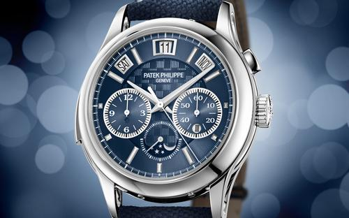
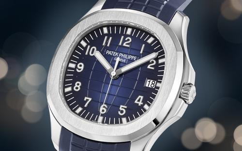
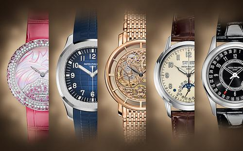
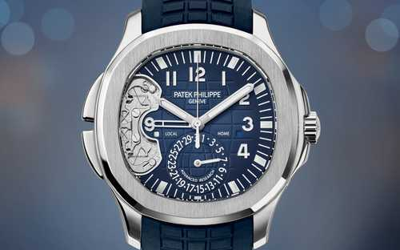
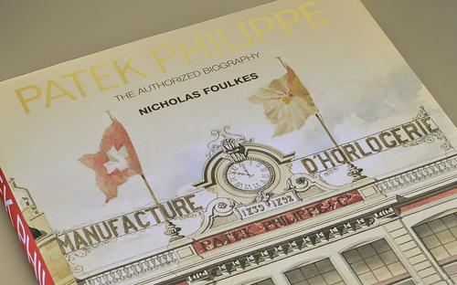
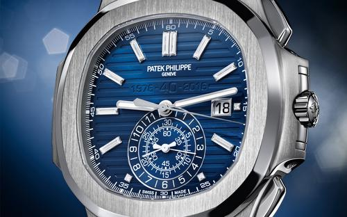
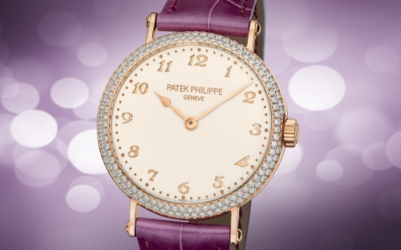

十一月 2017
ONLY WATCH 2017 / GENEVA – AUCTION RESULTS
The 7th Only Watch auction took place in Geneva on Saturday, November 11, 2017
十一月 2017
百达翡丽 AQUANAUT REF. 5168G
為廿載當代悠閒時尚加冕
六月 2017
THE ART OF WATCHES GRAND EXHIBITION NEW YORK 2017
Patek Philippe is delighted to present The Art of Watches, Grand Exhibition New York 2017 which will (...)
三月 2017
BASELWORLD 2017
Take a look at the exciting timepieces being unveiled to the press on March 22th 2017 at Baselworld. (...)
三月 2017
2017年新款|百达翡丽新款
全新系列亮相2017年巴塞尔国际钟表珠宝展，以多款新品扩充现有常规腕表系列，其中包括一款全新的万年历腕表、一款庆祝Aquanaut系列诞生20周年的全新腕表，以及多款经典的全新演绎，令高级制表工艺鉴赏 (...)
三月 2017
PATEK PHILIPPE ADVANCED RESEARCH AQUANAUT TRAVEL TIME REF. 5650G
Patek Philippe Advanced Research opens up a further chapter with the launch of two important (...)
十一月 2016
《PATEK PHILIPPE: THE AUTHORIZED BIOGRAPHY》，作者：尼克•福克斯
我们非常荣幸地宣布,《Patek Philippe: The Authorized (...)
九月 2016
百达翡丽NAUTILUS系列诞生四十周年
2016年，百达翡丽庆祝休闲优雅的Nautilus运动腕表系列诞生四十周年。对于许多经典制表工艺杰作的爱好者与收藏家而言，这是一个值得纪念的时刻。回顾这段始于1976年的传奇，不仅让我们了解到整个世界 (...)
八月 2016
百达翡丽CALATRAVA REF. 7200/200R
随着Calatrava Ref. (...)
六月 2014
THE MAISON PATEK PHILIPPE IN CHINA
The two Maisons in Beijing and Shanghai, together with the Patek Philippe Salons in Geneva, London, (...)